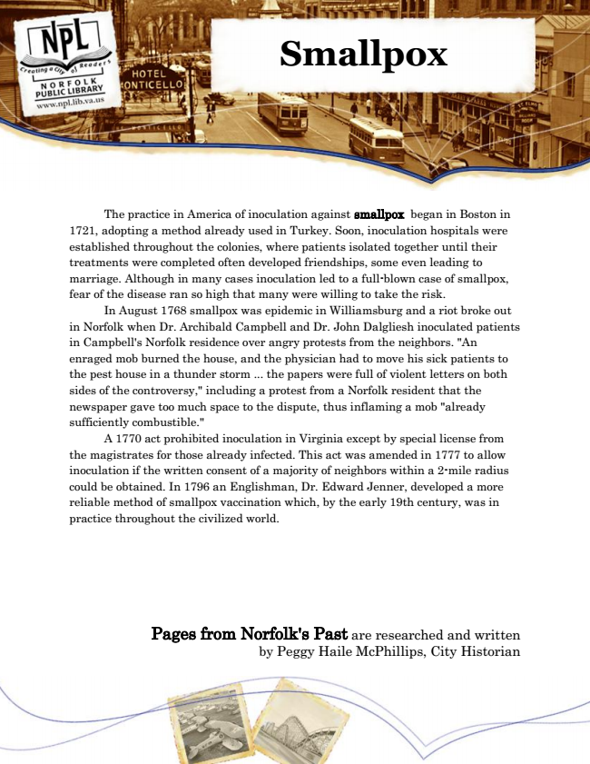

Smallpox
The practice in America of inoculation against smallpox began in Boston in 1721, adopting a method already used in Turkey. Soon, inoculation hospitals were established throughout the colonies, where patients isolated together until their treatments were completed often developed friendships, some even leading to marriage. Although in many cases inoculation led to a full-blown case of smallpox, fear of the disease ran so high that many were willing to take the risk.
In August 1768 smallpox was epidemic in Williamsburg and a riot broke out in Norfolk when Dr. Archibald Campbell and Dr. John Dalgliesh inoculated patients in Campbell's Norfolk residence over angry protests from the neighbors. "An enraged mob burned the house, and the physician had to move his sick patients to the pest house in a thunder storm ... the papers were full of violent letters on both sides of the controversy," including a protest from a Norfolk resident that the newspaper gave too much space to the dispute, thus inflaming a mob "already sufficiently combustible."
A 1770 act prohibited inoculation in Virginia except by special license from the magistrates for those already infected. This act was amended in 1777 to allow inoculation if the written consent of a majority of neighbors within a 2-mile radius could be obtained. In 1796 an Englishman, Dr. Edward Jenner, developed a more reliable method of smallpox vaccination which, by the early 19th century, was in practice throughout the civilized world.
Pages from Norfolk's Past are researched and written by Peggy Haile McPhillips, City Historian